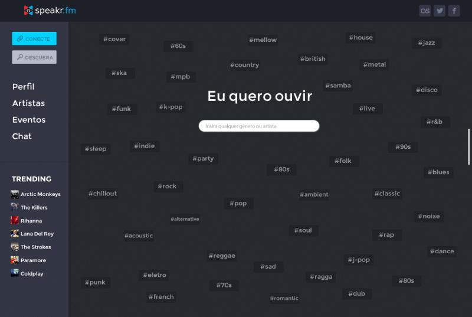

Hobbies and Interests
Outside of day-to-day product work, I spend time on music, competitive problem solving, and building small systems just to see how they behave. These habits showed up early in contests and side projects, and they still shape how I learn.
Music and Shared Playlists
I like music as a social object, not only as background noise. That interest led to Speakr.fm, a collaborative playlist product that mixed Facebook and Last.fm data with a YouTube player so groups could build a queue together.
I still care about the same idea: a good playlist is a conversation. Discovering a track, explaining why it fits, and handing the next song to someone else is more interesting to me than listening alone.

Contests and Making Things Move
I grew up around informatics and robotics competitions. Those rooms taught me to break a large problem into something a machine can finish before the clock does.
- Informatics contests, including an honorable mention in the Brazilian Olympiad in Informatics
- Robotics, including an honorable mention in the Latin American Robotics Competition
- Small hardware and software experiments that combine sensing, routing, and feedback
What I Reach for in Free Time
- Listening through a playlist with friends and arguing about the next track
- Reading about distributed systems and trying a small implementation of the idea
- Sketching product notes for tools I wish existed in finance or developer work
None of this is separate from engineering. The hobbies are just the version of the same curiosity that does not have a sprint deadline.